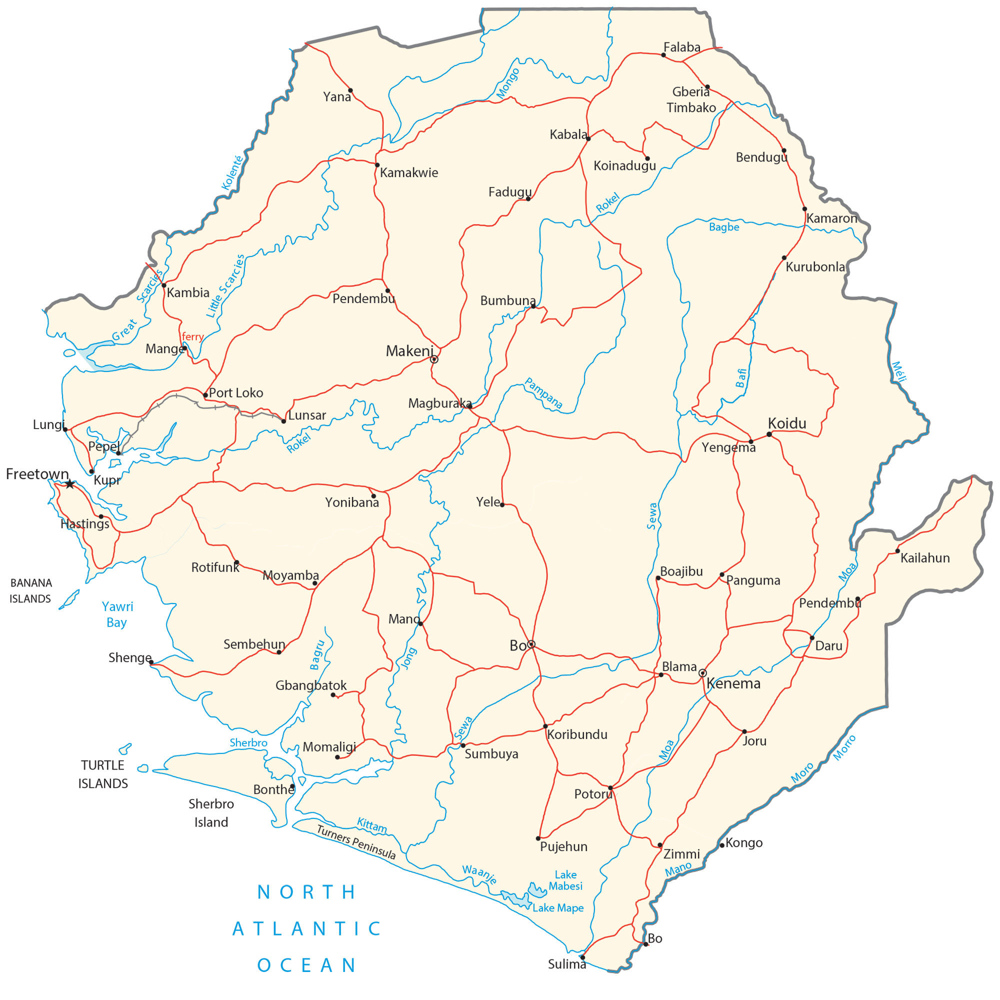

Sierra Leone is located in western Africa next to the Atlantic Ocean. It borders just 2 other African countries. First, Guinea surrounds Sierra Leone to the north and east. Secondly, Liberia is situated southwest of Sierra Leone.
Its coastline extends for 506 km along the North Atlantic Ocean with several islands like the Turtle Islands, Banana Islands, and Sherbro Island. Freetown is the capital and largest city of Sierra Leone. Other major cities in Sierra Leone are Bo, Kenema, and Koidu.
Go back home